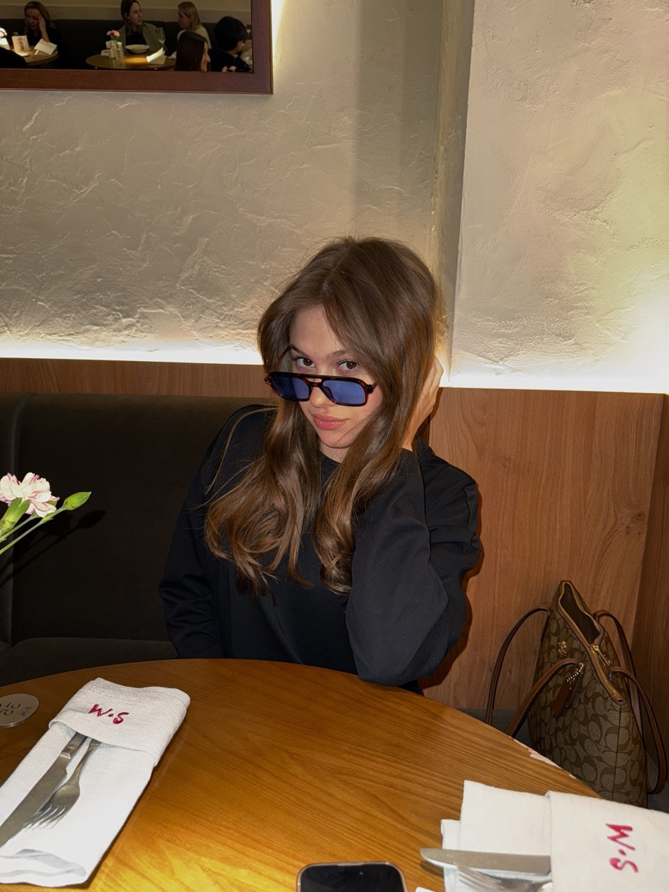
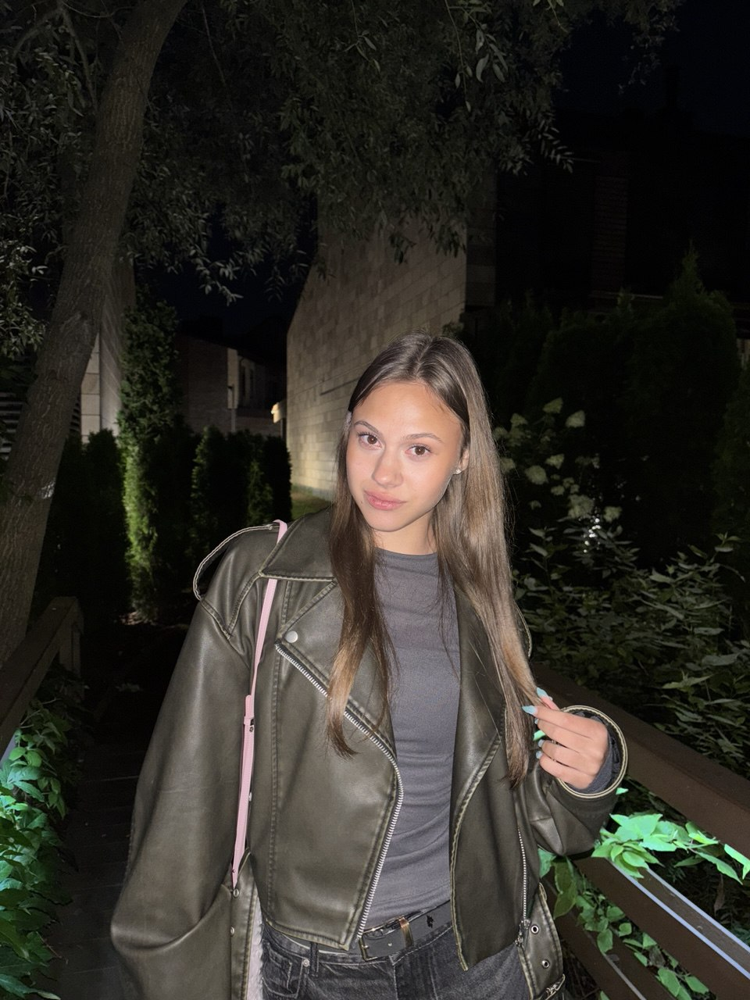
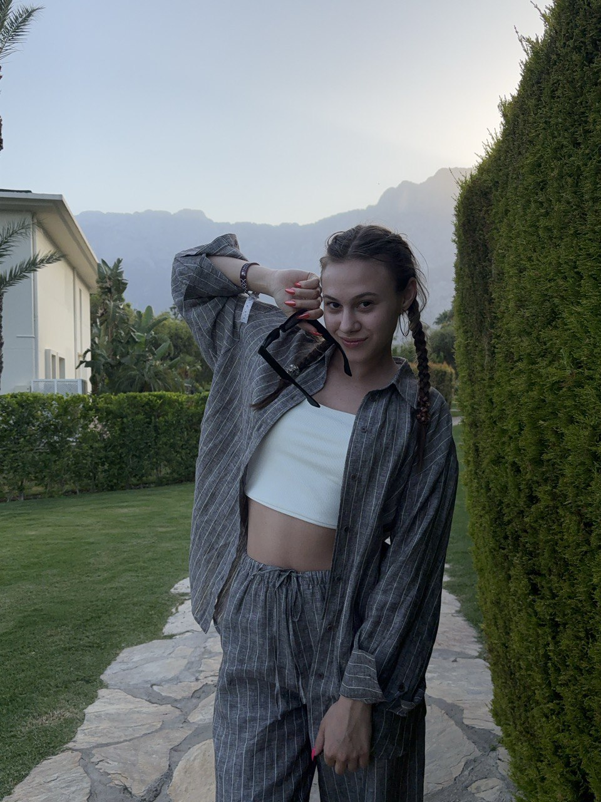

Меня зовут Тая Гагаркина.
Я начинающий фронтенд-разработчик.
Я хочу развиваться в IT, но пока не могу определиться с направлением.
Иногда тянет к веб-разработке, иногда — к созданию мобильных приложений, дизайну,
3D-анимации или даже разработке игр. Я ищу себя в этой сфере
и хочу попробовать всё, чтобы понять, что вдохновляет больше всего.



Хобби
Искусство
С трёх лет я ходила на занятия по рисованию, и именно тогда появилось моё увлечение искусством.
Позже я поступила в художественную школу и закончила её с красным дипломом. Долгое время я даже
думала связать свою жизнь с дизайном или архитектурой. Искусство по-прежнему занимает особое
место в моей жизни — не могу представить себя без творчества.
Танцы
Мой путь в танцах начался с самого раннего возраста. Сначала я занималась хореографией, позже
меня отправили на латиноамериканские танцы, а потом я открыла для себя контемпорари. Последние
несколько лет я занималась джаз-фанком — стилем, который объединяет разные современные
направления, от хип-хопа до вога.
Serialoholic
Когда мой список сериалов перевалил за сотню, я перестала считать и записывать, что уже
посмотрела. Люблю сериалы и смотрю их где-угодно и когда-угодно. Дома, за едой, в метро, на
парах, в машине, в самолете, перед сном и во время абсолютно любых сборов. Если я не отвечаю вам
— значит, вы отправили не самое интригующее сообщение, чтобы я отвлеклась от очередной серии :)
Пить кофе
Можно, пожалуйста, раф на банановом с лесным орехом или айс-капучино с каштановым сиропом..
Путешествия
Цель: побывать в каждом уголке мира
Я побывала в таких прекрасных местах как: Турция, Болгария, Таиланд, Греция, Египет, Испания, Франция,
Чехия, Германия, Кипр, Майорка, Тенерифе, Украина, Казахстан, Киргизия. И это только начало. Список
стран, где я оставлю свой след, будет только расти!
Мечты
Завести сфинкса
Осуждаю всех, кому не нравятся сфинксы. Самые красивые и милые создания во всем человечестве!!!
Пожить у моря
Хочу жить на берегу у моря — всегда свежий воздух, пляж рядом, купайся когда только вздумается.
Просыпаешься под шум волн, ужинаешь с видом на закат..
Побывать в Азии
Когда-нибудь я обязательно окажусь там и буду пробовать азиатскую еду, изучать архитектуру,
любоваться природой и кормить милых панд, оленей и других чудесных существ!